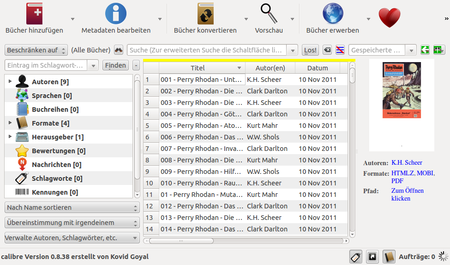

Calibre
Dieser Artikel wurde für die folgenden Ubuntu-Versionen getestet:
Ubuntu 14.04 Trusty Tahr
Zum Verständnis dieses Artikels sind folgende Seiten hilfreich:
Calibre  ist ein plattformunabhängiges Programm zur Verwaltung und Konvertierung von E-Books. Die Bücher können über USB oder per E-Mail an einen Reader gesendet werden. Calibre liest und schreibt unter anderem die Formate EPUB, LRF, MOBI und PDF (siehe ausführliche Liste unten). Es ist in Python geschrieben.
ist ein plattformunabhängiges Programm zur Verwaltung und Konvertierung von E-Books. Die Bücher können über USB oder per E-Mail an einen Reader gesendet werden. Calibre liest und schreibt unter anderem die Formate EPUB, LRF, MOBI und PDF (siehe ausführliche Liste unten). Es ist in Python geschrieben.
Das Programm unterstützt unter anderem:
Verwaltung von E-Books, Metadaten und Tags
Konvertierung zwischen verschiedenen Formaten
Synchronisation mit E-Book-Readern
Automatisierte Downloads von RSS-Feeds und Konvertierung in E-Book-Format
E-Book-Betrachter
E-Book-Editor (ab Version 1.15)
Kommandozeilen-Werkzeuge (Konvertierung, Metadaten-Bearbeitung, ...)
Installation¶
Das folgende Paket muss installiert [1] werden:
calibre (universe)
 mit apturl
mit apturl
Paketliste zum Kopieren:
sudo apt-get install calibre
sudo aptitude install calibre
Da sich das Programm in ständiger Entwicklung befindet, kann je nach Ubuntu-Versionen der Einsatz eines "Personal Package Archiv" (PPA) [2] oder eine manuelle Installation sinnvoll sein. Auch GetDeb stellt aktuelle Fremdpakete für Ubuntu 14.04 zur Verfügung.
PPA¶
Dieses PPA kann nur mit Ubuntu 14.04 genutzt werden!
Adresszeile zum Hinzufügen des PPAs:
ppa:n-muench/calibre
Hinweis!
Zusätzliche Fremdquellen können das System gefährden.
Ein PPA unterstützt nicht zwangsläufig alle Ubuntu-Versionen. Weitere Informationen sind der  PPA-Beschreibung des Eigentümers/Teams n-muench zu entnehmen.
PPA-Beschreibung des Eigentümers/Teams n-muench zu entnehmen.
Damit Pakete aus dem PPA genutzt werden können, müssen die Paketquellen neu eingelesen werden.
Nach dem Aktualisieren der Paketquellen erfolgt die Installation wie oben angegeben.
Manuell¶
Es erscheint fast wöchentlich eine neue Version mit Erweiterungen und Fehlerbehebungen. Ein Binärpaket der jeweils aktuellsten Version kann von der Homepage installiert werden. Vorher sollte eine aus den offiziellen Paketquellen installierte Version entfernt werden.
Hinweis!
Fremdpakete können das System gefährden.
Dazu verwendet man den folgenden Befehl [3][4] (Quelle: Download-Seite ):
sudo -v && wget -nv -O- https://raw.githubusercontent.com/kovidgoyal/calibre/master/setup/linux-installer.py | sudo python -c "import sys; main=lambda:sys.stderr.write('Download failed\n'); exec(sys.stdin.read()); main()" Am besten installiert man in das als Standard vorgegebene Verzeichnis /opt. Bei der späteren Einrichtung von calibre ist darauf zu achten, dass die E-Book-Sammlung nicht in einem Unterverzeichnis dieses Installationsverzeichnisses angelegt wird. Dies kann bei der Deinstallation zum Verlust der Sammlung führen.
Deinstallation¶
Während Pakete wie üblich über die Paketverwaltung deinstalliert werden, muss man dann zur Deinstallation einen anderen Weg wählen:
sudo python /usr/bin/calibre-uninstall
Erfolgte die Installation in das als Standard vorgegeben Verzeichnis /opt, so kann dies mit dem folgenden Befehl entfernt werden. [3][4] (Achtung: das Verzeichnis /opt/calibre wird mit allen Unterverzeichnissen gelöscht):
sudo rm -rf /opt/calibre
Einrichtung¶
Beim ersten Start muss im "Welcome Wizard" ein Verzeichnis angegeben werden, in dem calibre die Sammlung und die Metadaten ablegt. Ferner kann ein Reader-Modell angegeben werden, die bevorzugten Ausgabeformate werden dann entsprechend eingestellt. (Um die Einstellungen zu ändern, kann der Welcome Wizard später erneut aufgerufen werden.) Für die Konvertierung zwischen verschiedenen Dateiformaten steht eine Vielzahl von Einstellungsmöglichkeiten zur Verfügung. Durch Plug-ins kann calibre weiter angepasst werden.
Start von calibre¶
Unter GNOME befindet sich das Programm im Menü unter "Anwendungen -> Büro", unter KDE unter "Programme -> Büroprogramme". Alternativ kann calibre auch in einem Terminal-Fenster mit dem Befehl
calibre
gestartet werden.
Benutzung¶
Verwalten der E-Book-Sammlung¶
 Calibre speichert alle E-Books und Metadaten in einem eigenen Verzeichnis, dabei kann ein E-Book gleichzeitig in verschiedenen Formaten vorliegen. Nach dem Import eines Buches können die Metadaten bearbeitet werden (Autor, Titel, Herausgeber, ISBN, Cover, Bewertung zwischen eins und fünf, Datum, Beschreibung), außerdem kann jedes Buch einer Serie zugeordnet und mit beliebigen Stichwörtern ("Etiketten" beziehungsweise "Tags") versehen werden. (Tags und Serie erscheinen bei den Sony-Readern als "Sammlung" beziehungsweise "Collection".) Cover und Metadaten können mithilfe der ISBN aus dem Internet geladen werden.
Neben der tabellarischen Ansicht gibt es eine Cover-Ansicht.
Die Sammlung kann nach Autor, Titel, usw. sortiert werden, ferner gibt es umfangreiche Suchfunktionen. Mithilfe der Suchzeile können die Metadaten nach einem Stichwort durchsucht werden. Die Suche kann auf bestimmte Metadaten eingeschränkt und durch logische Operationen modifiziert werden. Um z.B. alle Bücher zu finden, die nicht mit dem Tag "gelesen" markiert sind, gibt man Folgendes in die Suchzeile ein:
not tag:gelesen
Für kompliziertere Suchen gibt es einen Suchdialog, der auch reguläre Ausdrücke unterstützt. Suchanfragen können gespeichert und auf Knopfdruck erneut abgerufen werden.
Verwalten eines Readers¶
Wird ein Reader über USB mit dem Rechner verbunden, so wird das Gerät von calibre eigenständig in das Dateisystem eingehängt und in der GUI angezeigt (siehe Screenshot oben). Ausgewählte Bücher können dann auf den Reader übertragen werden, wahlweise auf eine gegebenenfalls vorhandene Speicherkarte oder in den Hauptspeicher des Readers. Falls erforderlich, konvertiert calibre die übertragenen Bücher in das vom jeweiligen Reader bevorzugte Format.
Ferner kann man die auf dem Reader gespeicherten E-Books durchsuchen, löschen, auf den Rechner übertragen, usw.
Newsfeeds¶
Calibre kann Newsfeeds (RSS) herunterladen und in ein E-Book-Format umwandeln ("Nachrichten abrufen"). Ist beim Abruf ein Reader verbunden, werden die Nachrichten direkt auf den Reader übertragen.
Eine Vielzahl von Nachrichten-Feeds sind bereits vorkonfiguriert (z.B. heise online). Weitere können vom Nutzer hinzugefügt werden; für die Umwandlung in ein E-Book-Format muss dazu allerdings meistens noch ein "Schema" erstellt werden (siehe Benutzeranleitung).
Der Abruf der Nachrichten kann automatisch geschehen. Für jede Nachrichtenquelle kann dazu ein individueller Zeitplan eingerichtet werden (z.B. Abruf jeden Montag um 8 Uhr, oder Abruf alle zwei Tage).
Problembehebung¶
Reader wird nicht eingebunden¶
Der Reader erscheint nach Verbinden mit dem Rechner per USB nicht in der GUI von calibre. Startet man calibre aus einer Konsole, so erhält man unter anderem folgende Fehlermeldung:
DeviceError: Mount Helper konnte nicht gefunden werden: calibre-mount-helper.
Grund: der Mount-Helper von calibre befindet sich aus Sicherheitsgründen nicht in der Paketquelle (siehe 561958).
Es gibt zwei Möglichkeiten, dieses Problem zu lösen:
Man bindet die Reader-Verzeichnisse von Hand ein oder aktiviert automatisches Einbinden. Der Reader erscheint dann in der GUI.
Man installiert calibre aus der Fremdquelle
Netzwerk-Bibliothek¶
Die Calibre-Bibliothek kann auf einen anderen Rechner im Netzwerk verlagert (verschoben) werden. Auf diesem Rechner startet man Calibre im Server-Modus:
calibre-server OPTIONEN
Relevant sind dabei die folgenden Optionen (siehe auch calibre-server -h).
--daemonize- als Dienst starten--port xxx- Serverport festlegen--with-library PFAD- Pfad zur Bibliothek--password KENNWORT- Zugriff mit einem Kennwort schützen
Auf dem eigenen Rechner muss anschließend der Pfad zur Bibliothek angepasst werden.
Alternativ kann man die Bibliothek auch mittels Dropbox oder anderer Cloud-Dienste auf mehreren Rechner genutzt werden. Dann muss aber darauf geachtet werden, dass die Bibliothek nicht gleichzeitig auf zwei Rechnern geöffnet wird.
Kompatibilität¶
Ab Version 0.8.64 (aus dem PPA) unterstützt Calibre folgende Reader und Formate:
Unterstützte E-Book-Reader¶
Sony: alle Geräte der PRS-Reihe, Barnes & Noble Nook, Cybook Gen 3/Opus, Amazon Kindle, Entourage Edge, Longshine ShineBook, Ectaco Jetbook, BeBook/BeBook Mini, Irex Illiad/DR1000, Foxit eSlick, PocketBook, Italica, eClicto, Iriver Story, Airis dBook, Hanvon N515, Binatone Readme, Teclast K3 und baugleiche Klone, SpringDesign Alex, Kobo Reader, Trekstor 3.0, verschiedene Android Smartphones sowie iPhone und iPad. Zusätzlich kann man E-books mit der Funktion "Auf Festplatte speichern" auf jeden Reader, der vom Rechner als USB-Speichermedium erkannt wird, übertragen.
Die Einbindung nicht out-of-the-box unterstützter Geräte kann mit Hilfe des mitgelieferten "User Defined USB Driver"-Plugins und der Funktion "Hole Informationen zum Setup über benutzerdefiniertes Gerät" manuell versucht werden.
Unterstützte Eingabe-Formate¶
CBZ, CBR, CBC, CHM, DJVU, EPUB, FB2, HTML, HTMLZ, LIT, LRF, MOBI, ODT, PDF, PRC, PDB, PML, RB, RTF, SNB, TCR, TXT, TXTZ
Unterstützte Ausgabe-Formate¶
AZW3, EPUB, FB2, OEB, LIT, LRF, MOBI, HTMLZ, PDB, PML, RB, PDF, RTF, SNB, TCR, TXT, TXTZ
Links¶
Homepage
von CalibreOnlinehandbuch
für Calibre
djvubind ist ein Kommandozeilenprogramm, mit dem E-Books aus .tiff-Vorlagen im DjVu-Format erstellt werden können
FBReader - Anzeigeprogramm fuer DRM-freie E-Books
Sigil - grafischer Editor für EPUB-Dateien
E-Book-Verwaltung mit Calibre
 - heise Open Source, 11/2013
- heise Open Source, 11/2013
- Erstellt mit Inyoka
-
 2004 – 2017 ubuntuusers.de • Einige Rechte vorbehalten
2004 – 2017 ubuntuusers.de • Einige Rechte vorbehalten
Lizenz • Kontakt • Datenschutz • Impressum • Serverstatus -
Serverhousing gespendet von